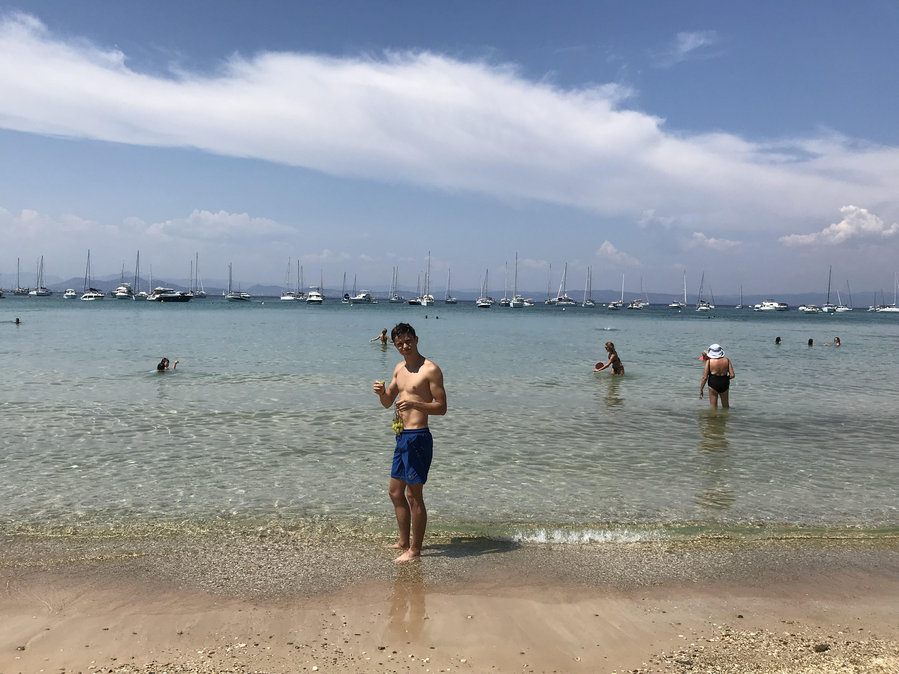
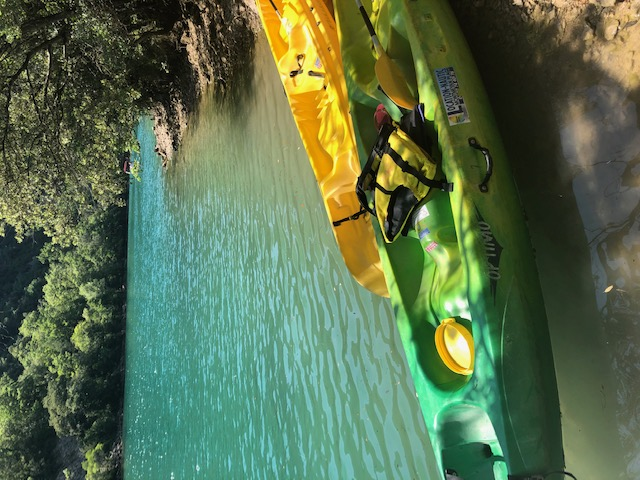
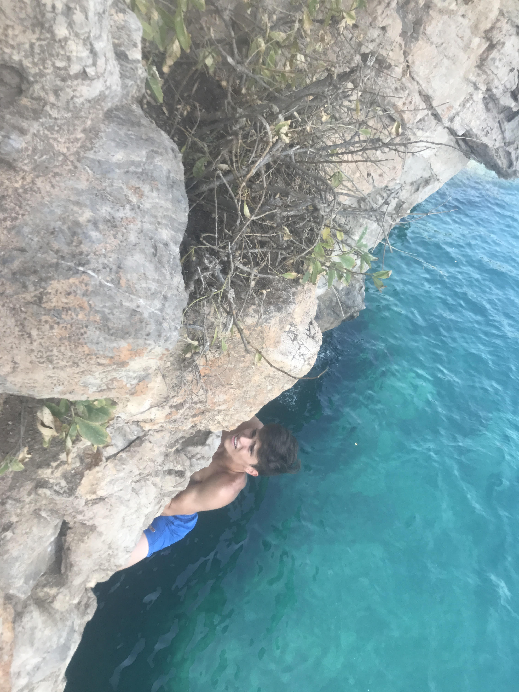

Vamos a la playaNous nous mettons à la recherche des plus belles criques, à des endroits peu fréquenté où la mer est bleu turquoise comme sur la photo (Regardez moi manger du raisin). Découvrir Hyères autrement. Cette balade sur le sentier du littoral vous emmènera le long de la presqu’île de Giens, à la découverte des criques cachées et surprenantes qui la bordent. On habite quand même dans un endroit où des millions de touristes viennent profiter de la plage. |
 |
|  |
Canoé dans les Gorges du VerdonIci ce n'est pas la mer mais un lac. Au bout des Gorges du Verdon, s’étend le lac de Sainte-Croix, cadre idéal pour terminer votre périple en kayak. Véritable canyon creusé par la rivière éponyme, ce site attire chaque année des centaines de visiteurs. |
La piadeBon la plage c'est marrant, l'eau c'est cool. Mais pourquoi ne pas en profiter pour grimper encore ? C'est ici à la piade, un site proche de Toulon et mondialement connu pour son escalade en deep water. Ici on grimpe et on tombe dans l'eau, attention à la réception ! |
 |